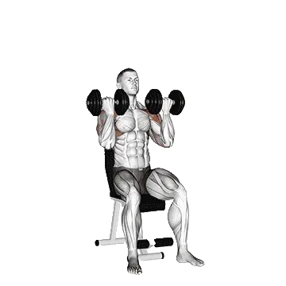

阿诺肩推
你可以查看阿诺肩推作为肩部代表动作的平均重量与力量标准。主要肌群为三角肌。
平均重量
肩部肩部训练三角肌肩推

目标肌群
| 分类 | 肌群 |
|---|---|
| 主要发力肌群 | 三角肌 |
| 辅助肌群 | 肱三头肌, 上胸 |
| 稳定肌群 | 腹外斜肌, 竖脊肌 |
| 握力 | 前臂屈肌群 |
阿诺肩推平均重量 [1RM]
| 等级 | ||
|---|---|---|
| 初学者 | 8 kg (19 lb) |
5 kg (11 lb) |
| 初级者 | 15 kg (34 lb) |
8 kg (19 lb) |
| 中级者 | 24 kg (54 lb) |
13 kg (28 lb) |
| 进阶者 | 36 kg (79 lb) |
18 kg (39 lb) |
| 菁英 | 49 kg (107 lb) |
24 kg (52 lb) |
注：这些标准是以一般训练者的 1RM 为基准估算。体重、年龄等个人因素都可能造成差异。详细数据请参考下方表格。
阿诺肩推 力量标准(lb)
남성 체중별(lb) 데이터 [1RM]
| 体重 | 初学者 | 初级者 | 中级者 | 进阶者 | 菁英 |
|---|---|---|---|---|---|
| 110 | 9 | 20 | 35 | 55 | 78 |
| 120 | 11 | 22 | 39 | 59 | 83 |
| 130 | 13 | 25 | 42 | 63 | 87 |
| 140 | 15 | 27 | 45 | 67 | 92 |
| 150 | 16 | 30 | 48 | 71 | 96 |
| 160 | 18 | 32 | 51 | 74 | 100 |
| 170 | 20 | 34 | 54 | 77 | 104 |
| 180 | 21 | 36 | 56 | 81 | 108 |
| 190 | 23 | 38 | 59 | 84 | 112 |
| 200 | 25 | 41 | 61 | 87 | 115 |
| 210 | 26 | 43 | 64 | 90 | 118 |
| 220 | 28 | 44 | 66 | 93 | 122 |
| 230 | 29 | 46 | 69 | 95 | 125 |
| 240 | 31 | 48 | 71 | 98 | 128 |
| 250 | 32 | 50 | 73 | 101 | 131 |
| 260 | 34 | 52 | 75 | 103 | 134 |
| 270 | 35 | 54 | 77 | 106 | 137 |
| 280 | 36 | 55 | 79 | 108 | 139 |
| 290 | 38 | 57 | 82 | 110 | 142 |
| 300 | 39 | 59 | 83 | 113 | 144 |
| 310 | 40 | 60 | 85 | 115 | 147 |
남성 나이별 데이터 [1RM]
| 年龄 | 初学者 | 初级者 | 中级者 | 进阶者 | 菁英 |
|---|---|---|---|---|---|
| 15 | 16 | 29 | 46 | 67 | 92 |
| 20 | 18 | 33 | 52 | 77 | 105 |
| 25 | 19 | 34 | 54 | 79 | 107 |
| 30 | 19 | 34 | 54 | 79 | 107 |
| 35 | 19 | 34 | 54 | 79 | 107 |
| 40 | 19 | 34 | 54 | 79 | 107 |
| 45 | 18 | 32 | 51 | 75 | 102 |
| 50 | 17 | 30 | 48 | 70 | 96 |
| 55 | 15 | 28 | 44 | 65 | 89 |
| 60 | 14 | 25 | 40 | 59 | 81 |
| 65 | 13 | 23 | 37 | 54 | 73 |
| 70 | 11 | 20 | 33 | 48 | 65 |
| 75 | 10 | 18 | 29 | 43 | 59 |
| 80 | 9 | 16 | 26 | 38 | 52 |
| 85 | 8 | 15 | 24 | 35 | 47 |
| 90 | 7 | 13 | 21 | 31 | 42 |
여성 체중별(lb) 데이터 [1RM]
| 体重 | 初学者 | 初级者 | 中级者 | 进阶者 | 菁英 |
|---|---|---|---|---|---|
| 90 | 7 | 13 | 21 | 30 | 41 |
| 100 | 8 | 14 | 22 | 32 | 43 |
| 110 | 9 | 16 | 24 | 34 | 45 |
| 120 | 10 | 17 | 25 | 36 | 47 |
| 130 | 11 | 18 | 27 | 37 | 49 |
| 140 | 12 | 19 | 28 | 39 | 51 |
| 150 | 13 | 20 | 29 | 40 | 53 |
| 160 | 14 | 21 | 31 | 42 | 54 |
| 170 | 14 | 22 | 32 | 43 | 56 |
| 180 | 15 | 23 | 33 | 45 | 57 |
| 190 | 16 | 24 | 34 | 46 | 59 |
| 200 | 17 | 25 | 35 | 47 | 60 |
| 210 | 17 | 26 | 36 | 48 | 61 |
| 220 | 18 | 26 | 37 | 49 | 63 |
| 230 | 19 | 27 | 38 | 50 | 64 |
| 240 | 19 | 28 | 39 | 51 | 65 |
| 250 | 20 | 29 | 40 | 52 | 66 |
| 260 | 20 | 29 | 40 | 53 | 67 |
여성 나이별 데이터 [1RM]
| 年龄 | 初学者 | 初级者 | 中级者 | 进阶者 | 菁英 |
|---|---|---|---|---|---|
| 15 | 10 | 16 | 24 | 34 | 44 |
| 20 | 11 | 18 | 27 | 38 | 51 |
| 25 | 11 | 19 | 28 | 39 | 52 |
| 30 | 11 | 19 | 28 | 39 | 52 |
| 35 | 11 | 19 | 28 | 39 | 52 |
| 40 | 11 | 19 | 28 | 39 | 52 |
| 45 | 11 | 18 | 27 | 37 | 49 |
| 50 | 10 | 17 | 25 | 35 | 46 |
| 55 | 9 | 15 | 23 | 32 | 43 |
| 60 | 9 | 14 | 21 | 30 | 39 |
| 65 | 8 | 13 | 19 | 27 | 35 |
| 70 | 7 | 11 | 17 | 24 | 32 |
| 75 | 6 | 10 | 15 | 21 | 28 |
| 80 | 6 | 9 | 14 | 19 | 25 |
| 85 | 5 | 8 | 12 | 17 | 23 |
| 90 | 4 | 7 | 11 | 16 | 21 |
注：一般健身房的标准杠铃通常为44 lb。
表格说明
| 等级 | 说明 | 分布 |
|---|---|---|
| 初学者 | 掌握正确动作，并持续训练至少 1 个月。 | 后 5% |
| 初级者 | 持续规律训练至少 6 个月。 | 前 80% |
| 中级者 | 持续规律训练至少 2 年。 | 前 50% |
| 进阶者 | 持续规律训练超过 5 年。 | 前 20% |
| 菁英 | 针对该动作专项训练超过 5 年。 | 前 5% |
其他训练动作
全身

硬拉
全身 / BIG3

卧推
全身 / BIG3

深蹲
全身 / BIG3

六角杠硬拉
全身

高翻翻站
全身

罗马尼亚硬拉
全身

相扑硬拉
全身

翻挺
全身

抓举
全身

翻站
全身

翻站推举
全身

架上硬拉
全身

哑铃罗马尼亚硬拉
全身 / 哑铃

悬垂翻站
全身

直腿硬拉
全身

双力臂
全身 / 自重

高翻抓举
全身

深蹲推举
全身

借力挺举
全身

哑铃硬拉
全身 / 哑铃

垫高硬拉
全身

单脚罗马尼亚硬拉
全身

波比跳
全身 / 自重

悬垂高翻
全身

分腿挺举
全身

哑铃抓举
全身 / 哑铃

翻站高拉
全身

抓举硬拉
全身

翻站拉
全身

暂停硬拉
全身

单脚硬拉
全身

肌力抓举
全身

杰佛森硬拉
全身

抓举拉
全身

墙球
全身

泽奇硬拉
全身

单脚哑铃硬拉
全身 / 哑铃

哑铃翻站推举
全身 / 哑铃

吊环双力臂
全身 / 自重

哑铃深蹲推举
全身 / 哑铃

悬垂抓举
全身

哑铃高拉拉
全身 / 哑铃

哑铃悬垂翻站
全身 / 哑铃

背后硬拉
全身

Clap拉Up
全身

深蹲推蹬
全身
胸部
卧推
胸部 / BIG3

哑铃卧推
胸部 / 哑铃

俯卧撑
胸部 / 自重

上斜卧推
胸部

上斜哑铃卧推
胸部 / 哑铃

窄握卧推
胸部

器械夹胸
胸部 / 器械

哑铃飞鸟
胸部 / 哑铃

下斜哑铃飞鸟
胸部 / 哑铃

下斜卧推
胸部

史密斯机卧推
胸部 / 器械

绳索飞鸟
胸部 / 绳索

胸推
胸部

地板推举
胸部

上斜哑铃飞鸟
胸部 / 哑铃

哑铃地板推举
胸部 / 哑铃

下斜哑铃卧推
胸部 / 哑铃

暂停卧推
胸部

单臂俯卧撑
胸部 / 自重

反握卧推
胸部

钻石俯卧撑
胸部 / 自重

窄握哑铃卧推
胸部 / 哑铃

卧推停杠推举
胸部

宽握卧推
胸部

下斜俯卧撑
胸部 / 自重

窄握上斜卧推
胸部

上斜俯卧撑
胸部 / 自重

窄握俯卧撑
胸部 / 自重

弓箭手俯卧撑
胸部 / 自重

Spoto推举
胸部
背部
硬拉
背部 / BIG3

引体向上
背部 / 自重

俯身划船
背部

高位下拉
背部

反握引体向上
背部 / 自重

哑铃划船
背部 / 哑铃

坐姿缆绳划船
背部 / 绳索

杠铃耸肩
背部 / 杠铃

T杠划船
背部

哑铃耸肩
背部 / 哑铃

Pendlay划船
背部

器械划船
背部 / 器械

哑铃过头拉
背部 / 哑铃

哑铃反向飞鸟
背部 / 哑铃

胸托哑铃划船
背部 / 哑铃

窄握高位下拉
背部

器械反向飞鸟
背部 / 器械

反握高位下拉
背部

中立握引体向上
背部 / 自重

直臂下拉
背部

绳索反向飞鸟
背部 / 绳索

耶兹划船
背部

俯身哑铃划船
背部 / 哑铃

背部伸展
背部

卧板划船
背部

器械背部伸展
背部 / 器械

杠铃过头拉
背部 / 杠铃

单臂引体向上
背部 / 自重

哑铃卧板划船
背部 / 哑铃

反向划船
背部

叛逆划船
背部

单臂高位下拉
背部

单臂坐姿缆绳划船
背部 / 绳索

绳索直立划船
背部 / 绳索

器械耸肩
背部 / 器械

六角杠耸肩
背部

史密斯机耸肩
背部 / 器械

哑铃上斜Y字平举
背部 / 哑铃

绳索耸肩
背部 / 绳索

屈臂杠铃过头拉
背部 / 杠铃

杠铃高翻耸肩
背部 / 杠铃

梅多斯划船
背部

背后杠铃耸肩
背部 / 杠铃

反向背伸
背部
肩部

肩推
肩部

哑铃肩推
肩部 / 哑铃

哑铃侧平举
肩部 / 哑铃

军事推举
肩部

坐姿肩推
肩部

坐姿哑铃肩推
肩部 / 哑铃

器械肩推
肩部 / 器械

借力推举
肩部

直立划船
肩部

哑铃前平举
肩部 / 哑铃

绳索侧平举
肩部 / 绳索

阿诺肩推
肩部

脸拉
肩部

颈屈
肩部

哑铃直立划船
肩部 / 哑铃

器械侧平举
肩部 / 器械

颈后推举
肩部

倒立俯卧撑
肩部 / 自重

杠铃前平举
肩部 / 杠铃

圆木推举
肩部

地雷管推举
肩部

颈伸展
肩部

Z推举
肩部

维京推举
肩部

Shoulder停杠推举
肩部

哑铃Z推举
肩部 / 哑铃

单臂地雷管推举
肩部

哑铃外旋
肩部 / 哑铃

屈体俯卧撑
肩部 / 自重

哑铃借力推举
肩部 / 哑铃

哑铃脸拉
肩部 / 哑铃

绳索外旋
肩部 / 绳索
手臂

哑铃弯举
手臂 / 哑铃

杠铃弯举
手臂 / 杠铃

锤式弯举
手臂

EZ杠弯举
手臂

牧师椅弯举
手臂

绳索二头弯举
手臂 / 绳索

哑铃集中弯举
手臂 / 哑铃

上斜哑铃弯举
手臂 / 哑铃

器械二头弯举
手臂 / 器械

严格弯举
手臂

单臂绳索二头弯举
手臂 / 绳索

单臂哑铃牧师椅弯举
手臂 / 哑铃

上斜锤式弯举
手臂

蜘蛛弯举
手臂

佐特曼弯举
手臂

坐姿哑铃弯举
手臂 / 哑铃

借力弯举
手臂

绳索锤式弯举
手臂 / 绳索

过顶绳索弯举
手臂 / 绳索

上斜绳索弯举
手臂 / 绳索

仰卧绳索弯举
手臂 / 绳索

双杠臂屈伸
手臂 / 自重

三头肌下压
手臂

仰卧三头肌伸展
手臂

绳索三头Pushdown
手臂

单臂下拉
手臂

哑铃三头肌伸展
手臂 / 哑铃

三头肌伸展
手臂

仰卧哑铃三头肌伸展
手臂 / 哑铃

坐姿撑体器械
手臂 / 器械

哑铃三头肌后踢
手臂 / 哑铃

绳索过顶三头肌伸展
手臂 / 绳索

器械三头肌伸展
手臂 / 器械

坐姿哑铃三头肌伸展
手臂 / 哑铃

反握三头肌下压
手臂

JM推举
手臂

Tate推举
手臂

吊环撑体
手臂 / 自重

椅上撑体
手臂 / 自重

腕弯举
手臂

反向杠铃弯举
手臂 / 杠铃

反向腕弯举
手臂

哑铃腕弯举
手臂 / 哑铃

哑铃反向腕弯举
手臂 / 哑铃

哑铃反向弯举
手臂 / 哑铃
腿部
深蹲
腿部 / BIG3

雪橇腿举
腿部

前蹲
腿部

臀推
腿部

腿伸展
腿部

水平腿举
腿部

哈克深蹲
腿部

坐姿腿弯举
腿部

哑铃保加利亚分腿蹲
腿部 / 哑铃

高脚杯深蹲
腿部

仰卧腿弯举
腿部

器械提踵
腿部 / 器械

哑铃弓步
腿部 / 哑铃

箱式深蹲
腿部

自重深蹲
腿部

垂直腿举
腿部

保加利亚分腿蹲
腿部

坐姿提踵
腿部

史密斯机深蹲
腿部 / 器械

髋外展
腿部

早安式
腿部

泽奇深蹲
腿部

杠铃弓步
腿部 / 杠铃

髋内收
腿部

过头深蹲
腿部

杠铃提踵
腿部 / 杠铃

哑铃深蹲
腿部 / 哑铃

分腿蹲
腿部

哑铃提踵
腿部 / 哑铃

绳索缆绳拉臀
腿部 / 绳索

站姿腿弯举
腿部

地雷管深蹲
腿部

杠铃反向弓步
腿部 / 杠铃

杠铃臀桥
腿部 / 杠铃

单脚推举
腿部

雪橇推举提踵
腿部

单脚深蹲
腿部

Belt深蹲
腿部

安全杠深蹲
腿部

手槍深蹲
腿部

暂停深蹲
腿部

杠铃哈克深蹲
腿部 / 杠铃

相扑深蹲
腿部

绳索后踢
腿部 / 绳索

自重提踵
腿部

弓步
腿部

臀桥
腿部

停杠深蹲
腿部

行走弓步
腿部

哑铃前蹲
腿部 / 哑铃

哑铃分腿蹲
腿部 / 哑铃

反向弓步
腿部

深蹲跳
腿部

北欧腿后腱弯举
腿部

西西深蹲
腿部

半程深蹲
腿部

臀腿抬举
腿部

绳索腿屈伸
腿部 / 绳索

单脚坐姿提踵
腿部

Side弓步
腿部

臀部后踢
腿部

驴式提踵
腿部

哑铃行走提踵
腿部 / 哑铃

侧抬腿
腿部 / 自重

杰佛森深蹲
腿部

地板髋外展
腿部

髋伸展
腿部

地板髋伸展
腿部
核心

仰卧起坐
核心 / 自重

绳索卷腹
核心 / 绳索

坐姿机械卷腹
核心 / 器械

卷腹
核心 / 自重

哑铃侧弯
核心 / 哑铃

缆绳伐木式转体
核心 / 绳索

悬垂抬腿
核心 / 自重

俄罗斯转体
核心 / 自重

仰卧抬腿
核心 / 自重

下斜仰卧起坐
核心 / 自重

悬垂提膝
核心 / 自重

健腹轮
核心

脚尖碰杠
核心 / 自重

下斜卷腹
核心 / 自重

开合跳
核心 / 自重

脚踏車卷腹
核心 / 自重

反向卷腹
核心 / 自重

打水Kicks
核心 / 自重

登山者
核心 / 自重

高位滑轮卷腹
核心 / 自重

站姿绳索卷腹
核心 / 绳索

超人式
核心 / 自重

侧腹卷腹
核心 / 自重

罗马椅侧弯
核心

剪刀脚
核心 / 自重